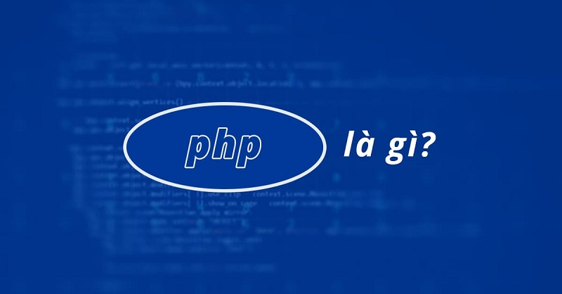

PHP - Hypertext Preprocessor hiểu ra tiếng việt PHP là bộ xử lý siêu văn bản trước đó được viết là Personal Home Pages – trang chủ cá nhân. Đây là ngôn ngữ lập trình được sử dụng chủ yếu trong việc phát triển các ứng dụng bằng một loạt các mã lệnh được viết cho máy chủ hay các mã nguồn mở, dùng trong mục đích phát triển các ứng dụng trang web, các trang web tĩnh hay trang web động. Các tệp lệnh PHP chỉ có thể được diễn giải trên một máy chủ đã cài đặt PHP. Một tệp lệnh PHP chứa các thẻ PHP được kết thúc bằng đuôi “.php”.
Ngôn ngữ lập trình PHP phù hợp với các web để có thể dễ dàng ứng dụng vào các trang HTML. Do đó nó được tối ưu hóa cho các ứng dụng web với những tính năng ưu việt như nhanh, gọn, cùng cấu trúc sử dụng tượng tự như C hay Java. Đây cũng được xem là ngôn ngữ lập trình khá dễ học và nhanh hơn so với một số ngôn ngữ lập trình khác. Bởi vậy, rất nhanh chóng, PHP trở thành ngôn ngữ lập trình web phổ biến nhất thế giới.
Ban đầu, PHP được tạo ra bởi Rasmus Lerdorf vào năm 1994 sau đó được hoàn hiện hơn bởi nhóm nghiên cứu PHP. Năm 1994 Rasmus Lerdorf viết một số chương trình giao diện CGI bằng ngôn ngữ lập trình C. Một tập lệnh là một tập hợp các hướng dẫn lập trình được diễn giải trong thời gian chạy. Ngôn ngữ script là ngôn ngữ diễn giải các script trong thời gian chạy. Các tập lệnh thường được nhúng vào các môi trường phần mềm khác.
Mục đích của các tập lệnh thường là để tăng cường hiệu năng hoặc thực hiện các tác vụ thông thường cho một ứng dụng. Các kịch bản phía máy chủ được diễn giải trên máy chủ trong khi các kịch bản phía máy khách được ứng dụng khách hiểu. PHP là một kịch bản phía máy chủ được diễn giải trên máy chủ trong khi JavaScript là một ví dụ về kịch bản phía máy khách được trình duyệt máy khác. Cả PHP và JavaScript đều có thể được nhúng vào các trang HTML
Bất cứ điều gì. PHP chủ yếu tập trung vào kịch bản phía máy chủ, vì vậy bạn có thể làm bất cứ điều gì mà bất kỳ chương trình CGI nào khác có thể làm, chẳng hạn như thu thập dữ liệu biểu mẫu, tạo nội dung trang động hoặc gửi và nhận cookie. Nhưng PHP có thể làm nhiều hơn thế.
Có ba lĩnh vực chính mà các tập lệnh PHP được sử dụng.
Thiết lập chương trình máy chủ: Đây là trường mục tiêu truyền thống và chính nhất cho PHP. Bạn cần ba thứ để thực hiện công việc này: trình phân tích cú pháp PHP (CGI hoặc mô-đun máy chủ), máy chủ web và trình duyệt web. Bạn cần chạy máy chủ web, với bản cài đặt PHP được kết nối. Bạn có thể truy cập đầu ra chương trình PHP bằng trình duyệt web, xem trang PHP thông qua máy chủ. Tất cả những thứ này có thể chạy trên máy chủ của bạn nếu bạn chỉ đang thử nghiệm lập trình PHP. Xem phần hướng dẫn cài đặt để biết thêm thông tin.
Tạo dòng tập lệnh: Bạn có thể tạo một tập lệnh PHP để chạy nó mà không cần bất kỳ máy chủ hoặc trình duyệt nào. Bạn chỉ cần trình phân tích cú pháp PHP để sử dụng nó theo cách này. Kiểu sử dụng này là lý tưởng cho các tập lệnh được thực thi thường xuyên bằng cron (trên *nix hoặc Linux) hoặc Trình lập lịch tác vụ (trên Windows). Các tập lệnh này cũng có thể được sử dụng cho các tác vụ xử lý văn bản đơn giản.Tạo ứng dụng làm việc: PHP có lẽ không phải là ngôn ngữ tốt nhất để tạo một ứng dụng máy tính để bàn có giao diện người dùng đồ họa, nhưng nếu bạn biết rất rõ về PHP và muốn sử dụng một số tính năng PHP nâng cao trong các ứng dụng phía máy khách của mình, bạn cũng có thể sử dụng PHP-GTK để viết các chương trình như vậy. Bạn cũng có khả năng viết các ứng dụng đa nền tảng theo cách này. PHP-GTK là một phần mở rộng cho PHP, không có sẵn trong bản phân phối chính. Nếu bạn quan tâm đến PHP-GTK.
PHP có thể được sử dụng trên tất cả các hệ điều hành chính, bao gồm Linux, nhiều biến thể Unix (bao gồm HP-UX, Solaris và OpenBSD), Microsoft Windows, macOS, RISC OS và có thể cả các biến thể khác. Ngôn ngữ lập trình PHP cũng đã hỗ trợ cho hầu hết các máy chủ web hiện nay. PHP hoạt động như một mô-đun hoặc bộ xử lý CGI. Vì vậy, ngôn ngữ lập trình PHP, bạn có quyền tự do lựa chọn một hệ điều hành và một máy chủ web. Hơn nữa, bạn cũng có thể lựa chọn sử dụng lập trình thủ tục hoặc lập trình hướng đối tượng (OOP) hoặc kết hợp cả hai.
Với PHP bạn không bị giới hạn ở HTML đầu ra. Các khả năng của PHP bao gồm xuất ra hình ảnh, tệp PDF, … được tạo khi đang di chuyển. Bạn cũng có thể dễ dàng xuất bất kỳ văn bản nào, chẳng hạn như XHTML và bất kỳ tệp XML nào khác. PHP có thể tự động tạo các tệp này và lưu chúng trong hệ thống tệp, thay vì in ra, tạo thành bộ đệm phía máy chủ cho nội dung động của bạn.
Một trong những tính năng mạnh nhất và quan trọng nhất trong PHP là sự hỗ trợ của nó cho một loạt các cơ sở dữ liệu . Viết một trang web hỗ trợ cơ sở dữ liệu cực kỳ đơn giản bằng cách sử dụng một trong các tiện ích mở rộng dành riêng cho cơ sở dữ liệu (ví dụ: đối với mysql ) hoặc sử dụng lớp trừu tượng như PDO hoặc kết nối với bất kỳ cơ sở dữ liệu nào hỗ trợ chuẩn Kết nối cơ sở dữ liệu mở thông qua tiện ích mở rộng ODBC . Các cơ sở dữ liệu khác có thể sử dụng cURL hoặc ổ cắm , như CouchDB.
PHP cũng có hỗ trợ để nói chuyện với các dịch vụ khác bằng các giao thức như LDAP, IMAP, SNMP, NNTP, POP3, HTTP, COM (trên Windows) và vô số các dịch vụ khác. Bạn cũng có thể mở các ổ cắm mạng thổ và tương tác bằng bất kỳ giao thức nào khác. PHP đã hỗ trợ cho việc trao đổi dữ liệu phức tạp WDDX giữa hầu như tất cả các ngôn ngữ lập trình Web. Nói về kết nối, PHP có hỗ trợ khởi tạo các đối tượng Java và sử dụng chúng trong suốt như các đối tượng PHP.
PHP có các tính năng xử lý văn bản hữu ích như Perl ( PCRE ), nhiều phần mềm mở rộng nhằm cho phép người dùng truy cập các tài liệu XML. Ngôn ngữ lập trình PHP có thể đem lại rất nhiều hữu ích cho cong người